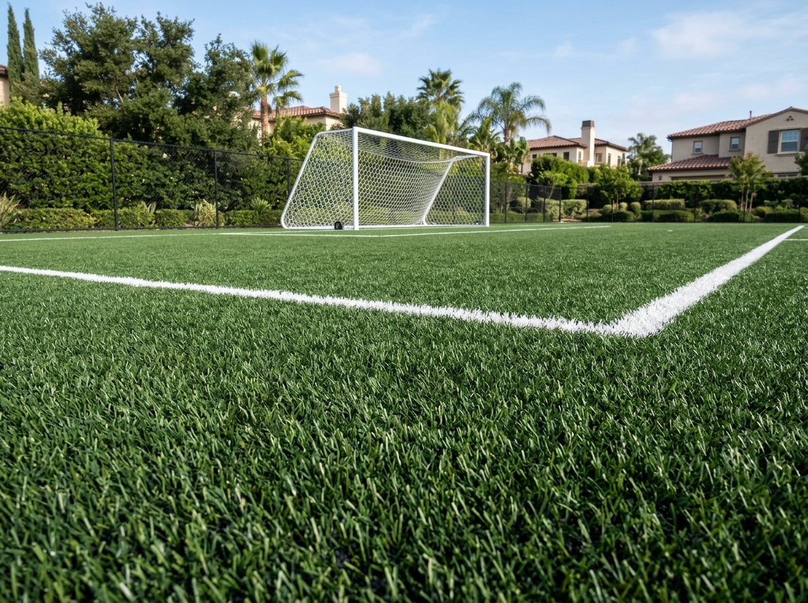

Tenis • 8:00 AM
Tenis • 8:00 AM
Compactación con Rodillo y Flejes
Pasada de rodillo matutina, aporte de polvo de ladrillo en zonas de desgaste y limpieza integral de flejes.
Servicio Exclusivo para Barrios Cerrados y Countries • Dirección Técnica: Tomás Domínguez
+54 9 11 7114-8366Asegurá el estado óptimo de tus superficies deportivas los 365 días del año. Experiencia comprobada y compromiso profesional.
08:00 AM
Rodillo y compactación matutina
365 Días
Cobertura continua todo el año
Santa Lucía
Trayectoria comprobada
Tenis • Pádel • Fútbol Sintético
Superficies firmes, parejas y seguras para los socios del barrio
Sabemos exactamente lo que exigen las administraciones, intendencias y comisiones deportivas: canchas impecables desde primera hora, cero reclamos de vecinos, cuidado real de la inversión en infraestructura y cumplimiento operativo estricto dentro del barrio.
Barrio Santa Lucía
Mantenimiento integral programado con estándar de club: polvo de ladrillo diario desde las 8 AM y acondicionamiento continuo de superficies.
¿Querés referencias para tu comisión?
Coordiná una visita técnica sin cargo con Tomás
Cada superficie recibe el tratamiento específico que requiere su material: compactación con rodillo, limpieza de flejes, nivelación de arena de sílice y caucho molido.
Tenis • 8:00 AM
Pasada de rodillo matutina, aporte de polvo de ladrillo en zonas de desgaste y limpieza integral de flejes.
 Pádel • Jueves
Pádel • Jueves
Acondicionamiento periódico cada jueves para garantizar agarre seguro y bote uniforme durante el fin de semana.

Fútbol • MensualDistribución mensual pareja y cepillado técnico para proteger la fibra sintética y amortiguar el impacto.
¿Querés ver fotos y videos actuales de nuestros trabajos en barrios cerrados? Pedíselos directo a Tomás por WhatsApp
Cronogramas claros, ejecutados con puntualidad y métodos específicos para mantener cada cancha en condiciones reglamentarias.
Polvo de ladrillo • Cuidado integral diario
Césped sintético • Puesta a punto semanal
Césped sintético • Carga y peinado técnico
Entendemos los requisitos legales, administrativos y de convivencia de un barrio cerrado. Trabajamos de forma formal, ordenada y previsible para que la administración delegue el área deportiva con total confianza.
Operarios especializados en superficies deportivas, con protocolos de horario estrictos y trato respetuoso hacia propietarios e intendencia.
Situación fiscal y documentación en regla lista para facturación formal e ingreso de personal a barrios cerrados sin demoras.
Dosificación técnica de polvo de ladrillo, arena de sílice y caucho molido para evitar desperdicios y cuidar el presupuesto del consorcio.
Comunicación ágil y sin intermediarios para coordinar horarios especiales, torneos del barrio y reparaciones preventivas.
Coordinemos una recorrida técnica por tus canchas de tenis, pádel o fútbol para presentarte un plan de mantenimiento a medida y un presupuesto claro.
Atención directa de Tomás Domínguez • WhatsApp +54 9 11 7114-8366